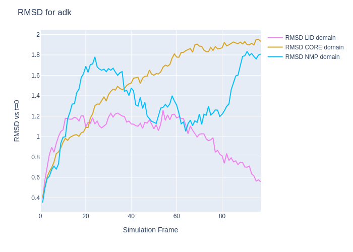

Using Plotly
Much of the analysis of MD simulations involves creating plots and graphs to summarize the data. The Python environment of Google Colab provides access to many of most popular plotting programs including R, Matplotlib, Seaborn, Plotly, and others. After reading about the pros and cons of the various packages I settled on Plotly. Plotly is powerful, offers 3D graphing and interactive plots, and has flexible styling for making publication-quality figures. And of course, it runs well in Jupyter notebooks.
Learning Objectives
At the end of this exercise, students will be able to do the following:
- Install Plotly in Colab.
- View a data table.
- Create an interactive plot of the data in a table.
- Add style to figures to enhance the visual hierarchy to easily distinguish the important elements from the peripheral.
- Combine multiple plots into a single figure.
- Locate additional resources on using Plotly in Colab.
Resources
- Plotly Tutorial for Beginners: Nice examples for most of the types of plots one would use.
- Plotly Basics: This tutorial explains the code very well.
- Getting Started with Plotly in Python: Go to the source for getting Plotly up and running.
- Data Visualization with Plotly Express
- Getting Plotly working in Jupyter Lab and fastpages
- Plotly Express in Python
Getting Started
- Switch to appropriate Google Account.
- Start a new notebook.
- Make sure you are still in the appropriate account.
- Mount Google Drive.
First, see if Plotly is installed:
import plotly
plotly.__version__
5.5.0 # Plotly 5.5 is already installed in Colab
Saving Images of Plots
I want to include a few images of the plots produced by Plotly in this website even though it is not needed in Colab. See Static Image Export in Python for instructions.
pip install -U kaleido
Warning
The pip installation did not work. I kept getting an error message that kaleido was not installed even though it installed successfully. This was solved by installing kaleido using conda.
!pip install -q condacolab
import condacolab
condacolab.install()
Once the kernel reboots, you are good to go.
Okay. Now we can export a plot as an image by including fig.write_image("fig1.png") in our code.
Using Plotly in Colab
Let's plot something. See IV_Plotly for most of the code, below.
import plotly.graph_objects as go
import numpy as np
fig = go.Figure()
config = dict({'scrollZoom': True})
fig.add_trace(
go.Scatter(
x=[1, 2, 3],
y=[1, 3, 1]))
fig.show(config=config)
fig.write_image("fig1.png")

Let's try another plot.
import plotly.express as px
iris = px.data.iris()
fig = px.scatter(iris, x="sepal_width", y="sepal_length", color="species", marginal_y="violin",
marginal_x="box", trendline="ols")
fig.show()
fig.write_image("fig2.png")

Success
And my favorite--a box plot!

Let's look at the underlying data as a table.
import plotly.graph_objects as go
import pandas as pd
import plotly.express as px
df = px.data.tips()
fig = go.Figure(data=[go.Table(
header=dict(values=list(df.columns),
fill_color='paleturquoise',
align='left'),
cells=dict(values=df.values.T,
fill_color='lavender',
align='left'))
])
fig.show()
fig.write_image("fig3.png") # make a figure

Note
The table is scrollable in Colab
I uploaded some .dat files from RMSD measurements from analyzing an MD trajectory in VMD.
Here is some useful Plotly information:
df.indexreturns the list of the index, in our case, it’s just integers 0, 1, 2, …, 97.df.columnsgives the list of the column (header) names.
This code:
import plotly.graph_objects as go
import pandas as pd
import plotly.express as px
df = pd.read_csv('/content/rmsd-core.dat',
sep='\s\s+', engine='python')
df.columns
Returns: Index(['frame', 'mol0'], dtype='object')
df.mol0 # gets the data in the specified column
# this wont work if the column has a space in it
0 NaN
1 0.405
2 0.507
3 0.606
4 0.657
...
93 1.914
94 1.898
95 1.951
96 1.953
97 1.932
Name: mol0, Length: 98, dtype: float64
See Get values in rows and columns in Pandas
dataframe['column name']
dataframe[ ['column name 1', 'column name 2', 'column name 3', ... ] ]
df.loc[row, column]. column is optional, and if left blank, we can get the entire row.
Let's look at one of the files I uploaded to Colab, msd-core.dat.
import plotly.graph_objects as go
import pandas as pd
import plotly.express as px
df = pd.read_csv('/content/rmsd-core.dat',
sep='\s\s+', engine='python')
# The above code creates a dataframe (df) from reading a csv file.
# our file was not really a csv file, so we need to specify
# the delimiter (spaces, using Regex), and the engine
# that does the reading
fig = go.Figure(data=[go.Table(
header=dict(values=list(df.columns),
fill_color='paleturquoise',
align='center'),
cells=dict(values=[df.frame, df.mol0],
fill_color='lavender',
align='left'))
])
# The above code creates a figure from the dataframe,
# and styles the header and the cells of the table.
fig.update_layout(width=500) # limits the table to a width of 500px
fig.show() # shows the figure
fig.write_image("rmsd-core.dat.png") # make a png of the figure

Styling Plots
To make it easier to assign colors to plots, I included a cell that contains code to produce swatches of named colors that will work in Colab. This code comes from the List of named colors page from the Matplotlib documentation website. On Colab, I put this code into a form so I can keep it out of the way.

#@title Named Colors Code
"""
====================
List of named colors
====================
This plots a list of the named colors supported in matplotlib. Note that
:ref:`xkcd colors <xkcd-colors>` are supported as well, but are not listed here
for brevity.
For more information on colors in matplotlib see
* the :doc:`/tutorials/colors/colors` tutorial;
* the `matplotlib.colors` API;
* the :doc:`/gallery/color/color_demo`.
"""
from matplotlib.patches import Rectangle
import matplotlib.pyplot as plt
import matplotlib.colors as mcolors
def plot_colortable(colors, title, sort_colors=True, emptycols=0):
cell_width = 212
cell_height = 22
swatch_width = 48
margin = 12
topmargin = 40
# Sort colors by hue, saturation, value and name.
if sort_colors is True:
by_hsv = sorted((tuple(mcolors.rgb_to_hsv(mcolors.to_rgb(color))),
name)
for name, color in colors.items())
names = [name for hsv, name in by_hsv]
else:
names = list(colors)
n = len(names)
ncols = 4 - emptycols
nrows = n // ncols + int(n % ncols > 0)
width = cell_width * 4 + 2 * margin
height = cell_height * nrows + margin + topmargin
dpi = 72
fig, ax = plt.subplots(figsize=(width / dpi, height / dpi), dpi=dpi)
fig.subplots_adjust(margin/width, margin/height,
(width-margin)/width, (height-topmargin)/height)
ax.set_xlim(0, cell_width * 4)
ax.set_ylim(cell_height * (nrows-0.5), -cell_height/2.)
ax.yaxis.set_visible(False)
ax.xaxis.set_visible(False)
ax.set_axis_off()
ax.set_title(title, fontsize=24, loc="left", pad=10)
for i, name in enumerate(names):
row = i % nrows
col = i // nrows
y = row * cell_height
swatch_start_x = cell_width * col
text_pos_x = cell_width * col + swatch_width + 7
ax.text(text_pos_x, y, name, fontsize=14,
horizontalalignment='left',
verticalalignment='center')
ax.add_patch(
Rectangle(xy=(swatch_start_x, y-9), width=swatch_width,
height=18, facecolor=colors[name], edgecolor='0.7')
)
return fig
plot_colortable(mcolors.BASE_COLORS, "Base Colors",
sort_colors=False, emptycols=1)
plot_colortable(mcolors.TABLEAU_COLORS, "Tableau Palette",
sort_colors=False, emptycols=2)
# sphinx_gallery_thumbnail_number = 3
plot_colortable(mcolors.CSS4_COLORS, "CSS Colors")
# Optionally plot the XKCD colors (Caution: will produce large figure)
# xkcd_fig = plot_colortable(mcolors.XKCD_COLORS, "XKCD Colors")
# xkcd_fig.savefig("XKCD_Colors.png")
# to save a copy of this figure
# plt.savefig('named-colors.png')
# plt.savefig must be before plt.show
plt.show()
#############################################################################
#
# .. admonition:: References
#
# The use of the following functions, methods, classes and modules is shown
# in this example:
#
# - `matplotlib.colors`
# - `matplotlib.colors.rgb_to_hsv`
# - `matplotlib.colors.to_rgba`
# - `matplotlib.figure.Figure.get_size_inches`
# - `matplotlib.figure.Figure.subplots_adjust`
# - `matplotlib.axes.Axes.text`
# - `matplotlib.patches.Rectangle`
Making Plots
Okay, let's plot some data. I uploaded .dat files from the RMSD analysis in VMD for three different domains of the Adk protein. We can look at the RMSD of each domain separately.
First I'll try to reproduce the plot made by VMD.
import plotly.graph_objects as go
import pandas as pd
import plotly.express as px
df = pd.read_csv('/content/rmsd-core.dat', sep='\s\s+', engine='python')
fig = px.line(df, x="frame", y="mol0", title='RMSD of CORE',
labels=dict(frame="simulation frame", mol0="RMSD vs t=0")
)
fig.update_layout(width=600)
fig.show()

Success
Now let's try the LID domain. I already uploaded the rmsd-lid.dat file. We'll start by looking at the data table.
import plotly.graph_objects as go
import pandas as pd
import plotly.express as px
df = pd.read_csv('/content/rmsd-lid.dat',
sep='\s\s+', engine='python')
df.columns
The output is: Index(['frame', 'mol0'], dtype='object'), and we see that the columns are labeled frame and mol0 like before.

import plotly.graph_objects as go
import pandas as pd
import plotly.express as px
df = pd.read_csv('/content/rmsd-lid.dat',
sep='\s\s+', engine='python')
fig = go.Figure(data=[go.Table(
header=dict(values=list(df.columns),
fill_color='paleturquoise',
align='center'),
cells=dict(values=[df.frame, df.mol0],
fill_color='lavender',
align='left'))
])
fig.update_layout(width=500)
fig.show()
Success
Let's make a plot.

df = pd.read_csv('/content/rmsd-lid.dat', sep='\s\s+', engine='python')
fig = px.line(df, x="frame", y="mol0", title='RMSD of LID Domain',
labels=dict(frame="simulation frame", mol0="RMSD vs t=0")
)
fig.update_layout(width=600)
fig.show()
Success
It would be useful to see all traces on the same figure. Let's give it a whirl.
In this method, each .dat file is read into a separate dataframe, and individual figures are produced. Each figure can be styled independently. Then all the figures are combined into one composite figure.

import plotly.express as px
import plotly.graph_objects as go
import pandas as pd
# Create dataframes for each file
df = pd.read_csv('/content/rmsd-core.dat', sep='\s\s+', engine='python')
df2 = pd.read_csv('/content/rmsd-lid.dat', sep='\s\s+', engine='python')
df3 = pd.read_csv('/content/rmsd-nmp.dat', sep='\s\s+', engine='python')
# create figure 1
fig1 = px.line(df, x="frame", y="mol0") # x and y are the column names
# change the color of the trace and add a name for the legend
fig1.update_traces(line=dict(color = 'violet'),
name="RMSD-core")
# create figure 2
fig2 = px.line(df2, x="frame", y="mol0")
# change the color of the trace and add a name for the legend
fig2.update_traces(line=dict(color = 'deepskyblue'),
name="RMSD-lid")
# create figure 3
fig3 = px.line(df3, x="frame", y="mol0")
# change the color of the trace and add a name for the legend
fig3.update_traces(line=dict(color = 'goldenrod'),
name="RMSD-nmp")
# construct the composite figure
fig4 = go.Figure(data=fig1.data + fig2.data + fig3.data)
# add the legend and the axes titles
fig4.update_traces(showlegend=True)
fig4.update_xaxes(title_text="Simulation Frame")
fig4.update_yaxes(title_text="RMSD vs t=0")
# change the graph width and add a graph title
fig4.update_layout(width=600, title_text="RMSD for adk")
# to anchor the legend in the top left of the graph, this works:
# fig4.update_layout(width=600, title_text="RMSD for adk",
# legend=dict(
# yanchor="top",
# y=0.99,
# xanchor="left",
# x=0.01
# ))
# show the graph
fig4.show()

import plotly.express as px
import plotly.graph_objects as go
import pandas as pd
# Create dataframes for each file
df = pd.read_csv('/content/rmsd-core.dat', sep='\s\s+', engine='python')
df2 = pd.read_csv('/content/rmsd-lid.dat', sep='\s\s+', engine='python')
df3 = pd.read_csv('/content/rmsd-nmp.dat', sep='\s\s+', engine='python')
# create figure 1
fig1 = px.line(df, x="frame", y="mol0") # x and y are the column names
# change the color of the trace and add a name for the legend
fig1.update_traces(line=dict(color = 'violet'),
name="RMSD-core")
# create figure 2
fig2 = px.line(df2, x="frame", y="mol0")
# change the color of the trace and add a name for the legend
fig2.update_traces(line=dict(color = 'deepskyblue'),
name="RMSD-lid")
# create figure 3
fig3 = px.line(df3, x="frame", y="mol0")
# change the color of the trace and add a name for the legend
fig3.update_traces(line=dict(color = 'goldenrod'),
name="RMSD-nmp")
# construct the composite figure
fig4 = go.Figure(data=fig1.data + fig2.data + fig3.data)
# add the legend and the axes titles
fig4.update_traces(showlegend=True)
fig4.update_layout(
legend=dict(
# the x and y positions will put legend in bottom middle of the figure
x=0.4,
y=0,
title_text="Legend",
bgcolor="whitesmoke"
)
)
fig4.update_xaxes(title_text="Simulation Frame")
fig4.update_yaxes(title_text="RMSD vs t=0")
# change the graph width and add a graph title
fig4.update_layout(width=600, title_text="RMSD for adk")
# to anchor the legend in the top left of the graph, this works:
# fig4.update_layout(width=600, title_text="RMSD for adk",
# legend=dict(
# yanchor="top",
# y=0.99,
# xanchor="left",
# x=0.01
# ))
# show the graph
fig4.show()
I also found a way to put all the figures on the same plot without needing to make individual dataframes. However I could only make this work by converting the files to .csv format. Luckily, we can do that.

# import stuff
import plotly.graph_objects as go
import pandas as pd
import numpy as np
import plotly.express as px
from pathlib import Path
# read the .dat file
df = pd.read_csv('/content/rmsd-nmp.dat',
sep='\s\s+', engine='python')
# write a .csv file
df.to_csv('/content/rmsd-nmp.csv', index = False, sep = ",")
# do it again for the other .dat files
df = pd.read_csv('/content/rmsd-core.dat',
sep='\s\s+', engine='python')
df.to_csv('/content/rmsd-core.csv', index = False, sep = ",")
df = pd.read_csv('/content/rmsd-lid.dat',
sep='\s\s+', engine='python')
df.to_csv('/content/rmsd-lid.csv', index = False, sep = ",")
# This code iterates over a directory and makes the plot while combining
# the csv files.
# location where the .csv files exist
p = Path.cwd().joinpath("/content/")
# Read and concatenate all the .csv files into one dataframe,
# creating an additional column that is the filename.
# Plot the combined dataframe scatter (line),
# using one plot / color per csv file.
fig5 = px.line(
pd.concat(
[pd.read_csv(f).assign(name=f.name) for f in p.glob("rmsd-*.csv")],
),
color_discrete_map={
'rmsd-core.csv':'goldenrod', # a color for this filename
'rmsd-nmp.csv':'deepskyblue', # a color for this filename
'rmsd-lid.csv':'violet' # a color for this filename
},
x="frame", # the column to use as the X-axis
y="mol0", # the column to use as the Y-axis
color="name", # color each line based on filename
labels={
"frame": "Simulation Frame", # a title for the X-axis
"mol0": "RMSD vs t=0", # a title for the Y-axis
"name": "" # figure legend title (leave empty for no title)
})
# to anchor the legend in the top left of the graph, uncomment
# the code below.
# fig5.update_layout(width=600, title_text="RMSD for adk",
# legend=dict(
# yanchor="top",
# y=0.99,
# xanchor="left",
# x=0.01
# ))
# Rename the traces
newnames = {'rmsd-core.csv':'RMSD CORE domain',
'rmsd-nmp.csv':'RMSD NMP domain',
'rmsd-lid.csv':'RMSD LID domain'}
fig5.for_each_trace(lambda t: t.update(name = newnames[t.name]))
# set the figure width and give the figure a title
fig5.update_layout(width=700, title_text="RMSD for adk")
# To create an image of the plot, uncomment the code below.
# fig5.write_image("rmsd-all-v2.png")
# show the figure
fig5.show()
Here is a Python tool to draw a Ramachandran Plot. I especially like the tabs to see plots of specific amino acids.
Here is a tip on Exporting Jupyter notebooks with Plotly graphs